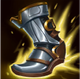
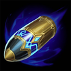
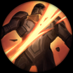
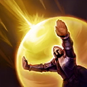
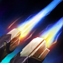

核心裝備
- 奪魄之鐮
 磁性雷射槍
磁性雷射槍 多明尼克的問候
多明尼克的問候- 狂風之力
 無盡之刃
無盡之刃
以下為本站 7.2d 校正後的標準配置；實戰仍需依敵方陣容調整。






技能優先：Q > E > W

每次施放技能後，下一次普攻會連射兩發，是技能穿插普攻的核心。
對指定目標射出穿透光束，並傷害其後方直線上的敵人。
發射星形爆炸彈並標記敵人；攻擊被標記目標可提高跑速。
向指定方向短距位移，雙槍普攻可縮短冷卻，利於連招與拉扯。
朝指定方向持續高速射擊，可邊移動邊輸出，用於壓血、追擊與收尾。
3技調位 → 被動雙槍 → 1技貫穿 → 被動雙槍 → 2技標記 → 被動雙槍
位移後把每次被動雙槍打完整，再銜接下一個技能；若敵方控制未交，三技改成橫向或向後使用。
1技穿過士兵 → 2技遠距標記 → 普攻觸發加速 → 3技撤離
用士兵作為一技施放目標命中後方英雄，二技標記後普攻取得跑速，最後用三技退出反打距離。
3技進入射程 → 被動雙槍 → 2技 → 被動雙槍 → 1技 → 被動雙槍 → 4技追擊收尾
每組雙槍都會縮短三技冷卻，讓路西恩能再次調整位置；大絕適合敵人撤退或自己無法安全普攻時使用。
路西恩的優勢來自每次施放技能後接上光之獵手雙槍，任何只丟技能不接普攻的換血都會浪費傷害。利用鋒芒貫穿穿過士兵消耗，冷酷進擊不要固定往前交；敵方控制仍在時，短位移更適合橫向躲招或撤退。
奪魄之鐮與磁性雷射槍完成後進入強勢節奏，積極跟隊爭奪物件並用技能—雙槍循環快速轉火。冷酷進擊的冷卻可被雙槍普攻縮短，連招中每次被動都要打完整，才能在一次戰鬥中多次位移。
後期面對長射程陣容時不要強行正面貼近，先用赤色屠戮壓低血量或逼走位，再尋找安全窗口輸出。位移要優先保命，攻擊最近的安全目標；只有確認敵方關鍵控制已交，才向前追擊。
對局名單是本站依英雄機制與目前配置整理的參考，不等同固定勝率。
先照標準出裝與符文走；只有敵方陣容真的形成威脅時，再替換必要格子。
觸發：敵方至少有 2 名高生命／高護甲前排，而且團戰多數時間必須先處理前排。
標準配置已經有足夠打坦能力；如果已有斷切、百分比穿透或殞落，就不要為了「坦克多」硬拆暴擊／攻速核心。
觸發：敵方有多名能直接貼到後排的刺客／爆發英雄，或你常在開始輸出前就被秒。
守護天使提供物防與復活，適合把最後一個純輸出位換成容錯。
魔提斯深淵提供魔防與低血量魔法護盾，比單純增加輸出更能保住進場或持續輸出。
骨甲直接降低同一名敵人接續幾次技能或普攻的傷害。
觸發：敵方有多個硬控，而且控制鏈會讓你直接失去輸出時間。
先購買水銀飾帶取得主動解控，之後再合成水星彎刀；水銀飾帶是合成組件，不是另一件要與水星彎刀互換的成裝。
犧牲部分輸出型傳奇符文，換取韌性與緩速抗性。
提醒：水星彎刀的路線是先購買水銀飾帶，再完成水星彎刀；水銀飾帶不是另一件終局成裝。
觸發：敵方有多名高治療／高吸血英雄，或核心前排能在團戰中大量回血。
致死宣告兼顧暴擊、穿透與重創，適合射手在不拆核心輸出邏輯下補反治療。
觸發：敵方有多個大量護盾來源，而且己方沒有其他更適合負責反護盾的英雄。
巨蛇鋒牙降低敵方護盾，只有護盾真的成為團戰主要問題時才值得犧牲一般輸出位。
提醒：反護盾裝通常是彈性位，不要只因敵方有一個小護盾就固定購買。
7.2a 飛龍路第一批正式攻略：技能名稱與核心機制依 Riot Games 台灣《激鬥峽谷》英雄頁校正；版本基準採官方 7.2a 更新公告，出裝、符文、召喚師技能與實戰節奏交叉參考 WildRiftFire Patch 7.2a 後整合。Tier 維持本站既有飛龍路評級。｜v65：套用吉茵珂絲 v64 固定母版，補齊起手裝、核心三件、五件成裝、Lv.1～15 加點、三組連招與前中後期策略。｜v76 第二階段：新增 3 位合適輔助與搭配理由，並完成攻略內容欄位驗收。
本站於 2026-08-27 依 Patch 7.2d 重新檢查此配置。 Tier、出裝、符文與對局屬於 Wild Rift Guide 的整理與分析，不是 Riot Games 官方推薦；版本改動後會再依官方公告與實戰資料校正。